PRAXIS DES SEGELNS
58
Die Crew bespricht rechtzeitig das Anlegemanöver, damit der Vorschoter Zeit genug hat, Festmacher, Fender und einen Bootshaken bereit zu legen. Als Anlaufkurs zum Aufschießer empfiehlt sich die Segelstellung halber Wind. So segelt man bei entsprechender Windrichtung fast parallel zum Steg. Man kann den zukünftigen Liegeplatz aussuchen und die Auslaufstrecke gut abschätzen. In einigen Revieren empfiehlt es sich, die Fock zu bergen, damit ein ungestörtes Arbeiten auf dem Vordeck möglich ist. Der Nachteil: Klappt der Aufschießer nicht, kann die Fock nicht für das schnelle Backhalten genutzt werden. Der Vorschoter hat alle Hände voll zu tun: Fender rausholen, Fock loswerfen und mit der Vorleine in der Hand an Land oderauf den Steg springen. Der Steuermann hat die Möglichkeit, die Auslaufstrecke zu beeinflussen: Je stärker er Ruder legt, desto mehr bremst er das Boot und umgekehrt. Eine weitere Bremsmöglichkeit ist das Backhalten des Großsegels.
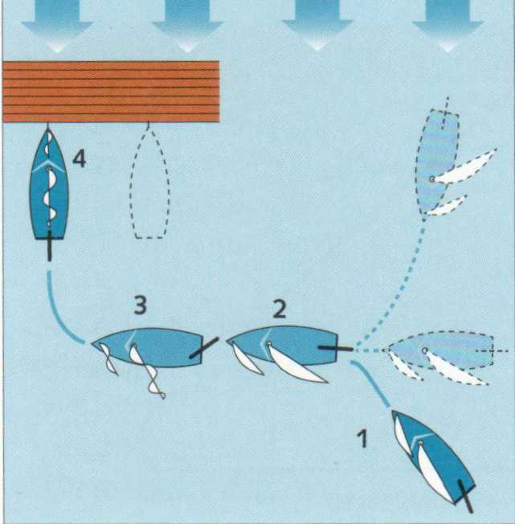
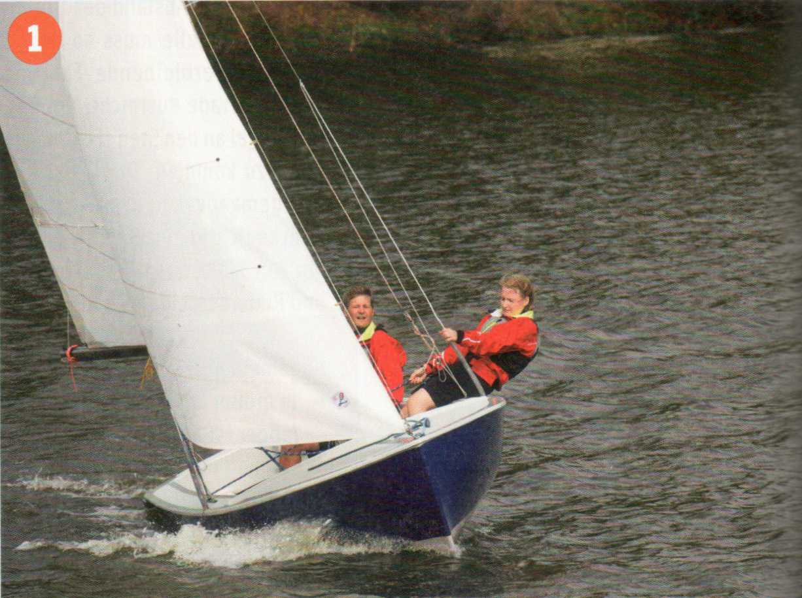
1 Der Steuermann sucht den Liegeplatz aus...
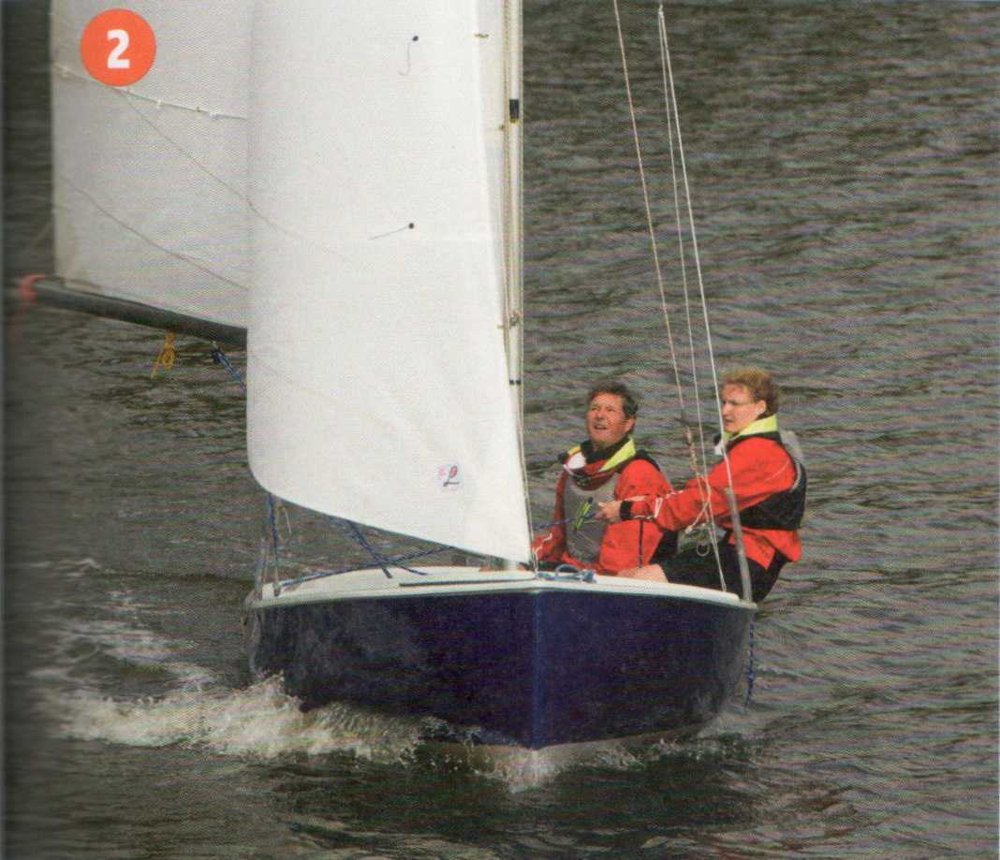
2 ... und fällt ab auf Halbwind.
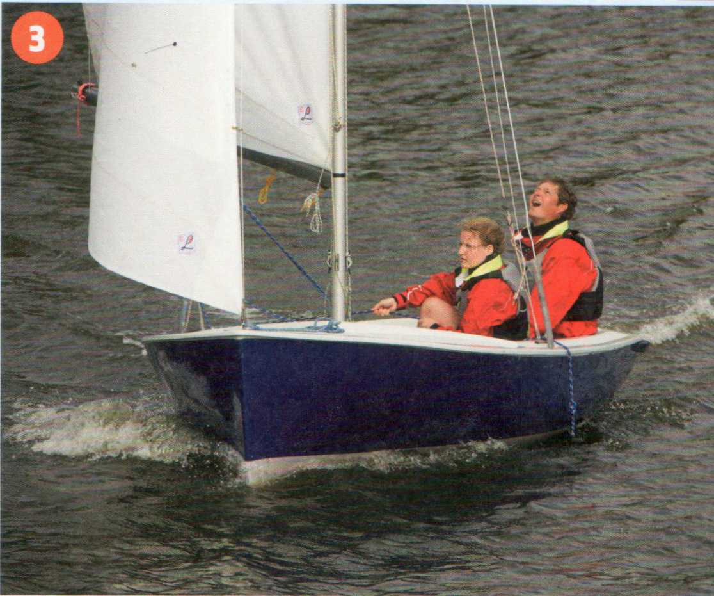
3 Er kontrolliert die Segelstellung und den Querabstand.
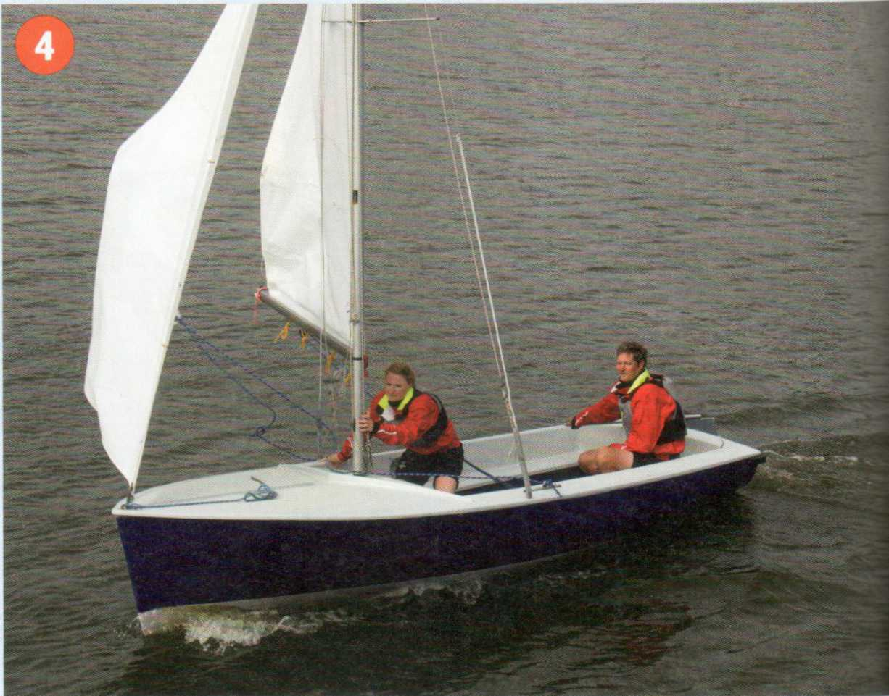
4 Die Schoten werden losgeworfen. Der Aufschießer wird eingeleitet.
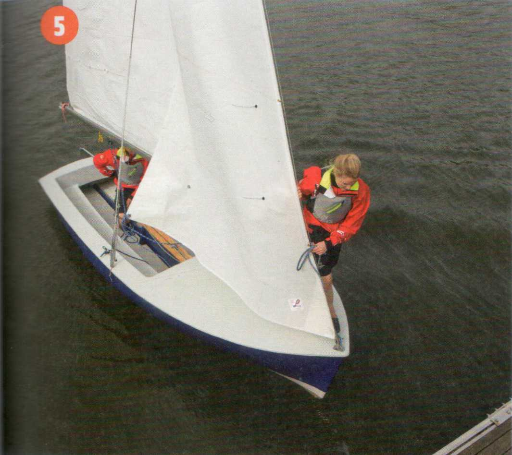
5 Das Boot läuft aus, der Vorschoter ist mit Vorleine in der Hand auf das Aussteigen vorbereitet.
|
Kommandotafel Anlegen am Steg |
|
Klar zum Anlegen! (Klar zum Bergen des Vorsegels!) (Vorsegel ist klar zum Bergen!) (Hol nieder Vorsegel!) Los die Großschot! Klar zum Bergen des Großsegels! Großsegel ist klar zum Bergen! Hol nieder Großsegel! Klar Deck überall! |
|
Typische Anfängerfehler |
|
Das Boot steht beim Aufschießer nicht genau im Wind, die Schoten sind nicht ganz losgeworfen, der Vorschoter steigt beim Anlegen ohne die Vorleine aus. |
Das Manöver ist im Prinzip das gleiche wie beim Anlegen am Steg, eignet sich aber vorzüglich zum Üben, weil es bei einem mit zu viel Fahrt verpatzten Manöver nicht gleich kracht, sondern man elegant vorbeilaufen, abfallen und einen neuen Versuch unternehmen kann. Der Steuermann sollte sich schon vor dem Einleiten des Aufschießers darüber im Klaren sein, zu welcher Seite er anschließend abdrehen will: Wegdrehen nach Backbord - Boje an Steuerbord und umgekehrt.
Bei einem gekonnten Manöver kommt das Boot so dicht vor der Boje zum Stehen, dass man sie mit der Hand greifen kann. Zu viel Fahrt beim Auslaufen lässt sich mit dem am Baum backgehaltenen Großsegel abstoppen. Das setzt eine gut eingespielte Crew voraus. Das Bergen der Fock vor dem Anlegen ist durchaus üblich. Damit ist ein ungestörtes Arbeiten auf dem Vorschiff gewährleistet. Eine verhakte oder backstehende Fock könnte zudem das Boot von der Boje wegdrehen.
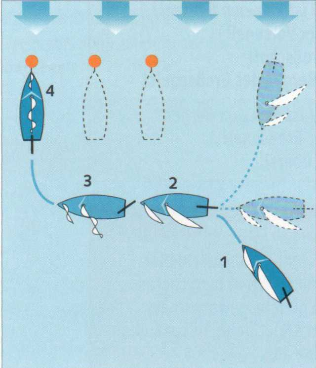
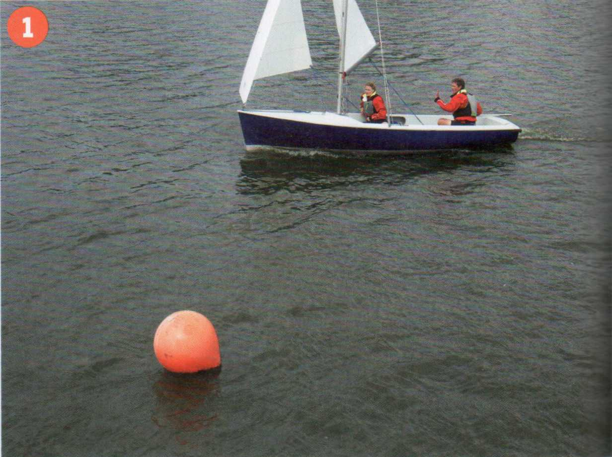
1 Anlaufkurs und Aufschießer vorbereiten.
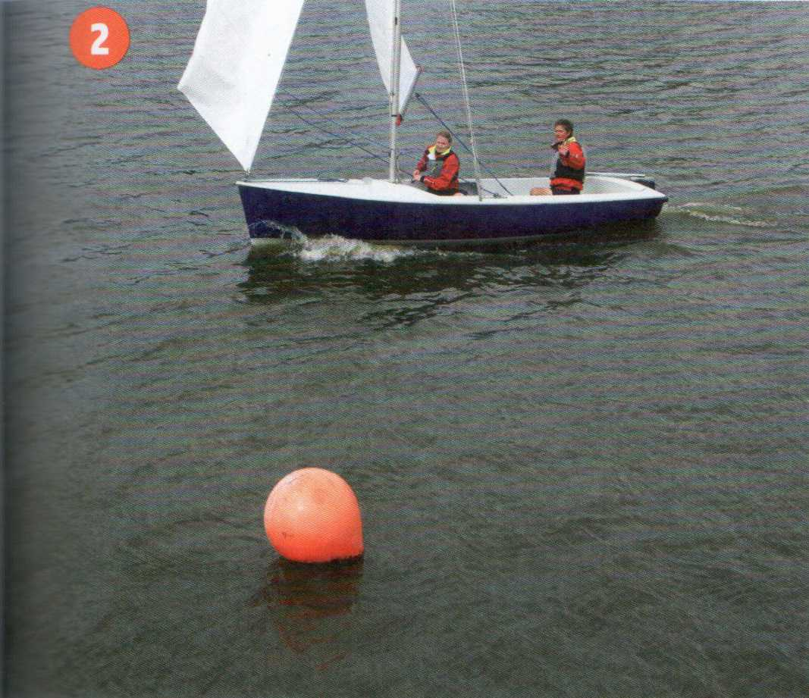
2 Schoten loswerfen.
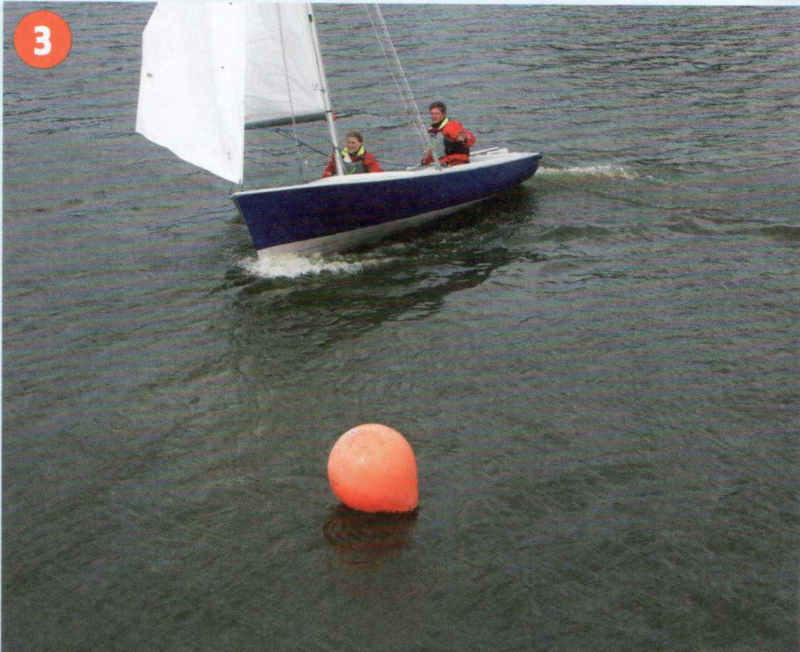
3 Aufschießereinleiten, stark Ruderlegen.
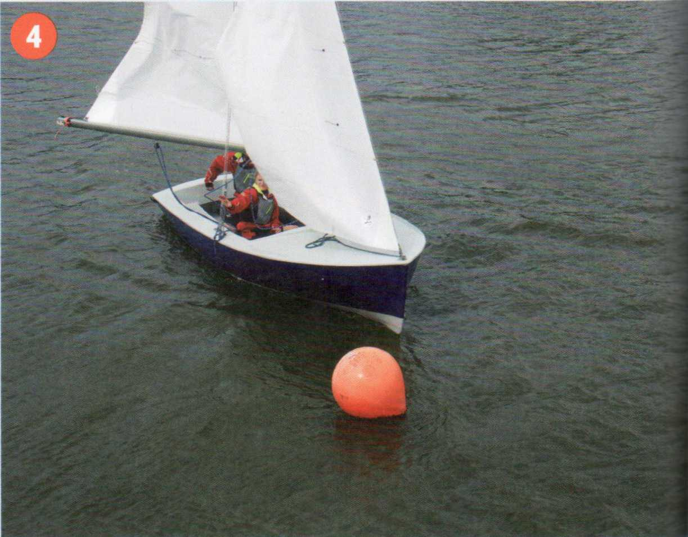
4 Der Vorschoter weist den Kurs zur Boje ...
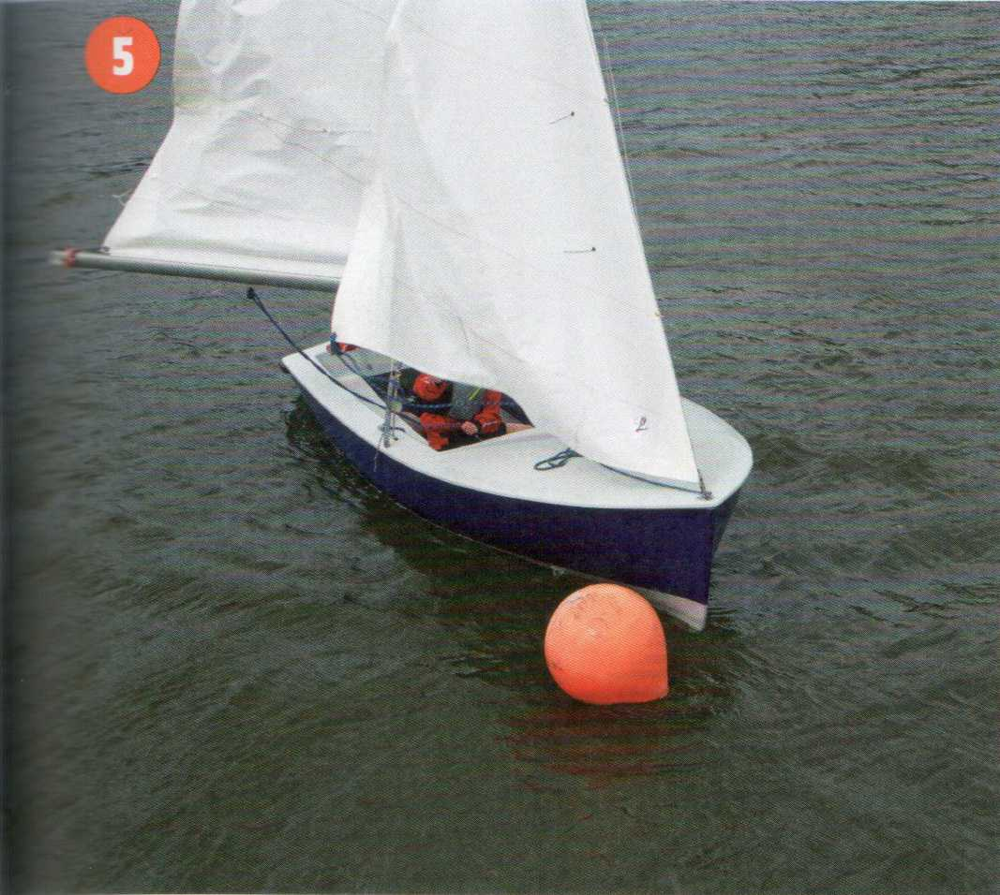
5 ... und diese wird sicher gefasst.
|
Kommandotafel Anlegen an der Boje |
|---|
|
Klar zum An-die-Boje-Gehen! (Klar zum Bergen des Vorsegels!) (Vorsegel ist klar zum Bergen!) (Hol nieder Vorsegel!) Los die Großschot! Boje ist gefasst! Klar zum Bergen des Großsegels! Großsegel ist klar zum Bergen! Hol nieder Großsegel! Klar Deck überall! |
Steht der Wind direkt auf die Anlegestelle, wird vorher in Luv der Anlegestelle mit hinreichendem Abstand ein Aufschießer oder Nahezu-Aufschießer gefahren und das Großsegel schnell geborgen. Dann Fock back und abfallen und vor dem Wind auf die Anlegestelle zulaufen. Hat das Boot genügend Fahrt, um auslaufend den Steg zu erreichen, auch die Fock bergen. Bei viel Wind wird sie gleich nach der Drehung geborgen. Selbst dann wird es meist nicht möglich sein, das Boot völlig zum Stillstand zu bringen, weil es auch unter dem nackten Rigg noch Fahrt macht. Deshalb muss auf dem Vorschiff eines leichteren Bootes jemand bereitstehen, um mit Bootshaken, Fendern oder von Hand den möglichen leichten Anprall aufzufangen. Auf einem schwereren Boot ist die Fahrt nur mit ein oder zwei Achterleinen abzustoppen, die mit einer Bucht um die Boxenpfähle genommen werden.
Eine andere Methode ist, vor der Anlegestelle einen Aufschießer zu machen und sich achteraus an den Steg treiben zu lassen.
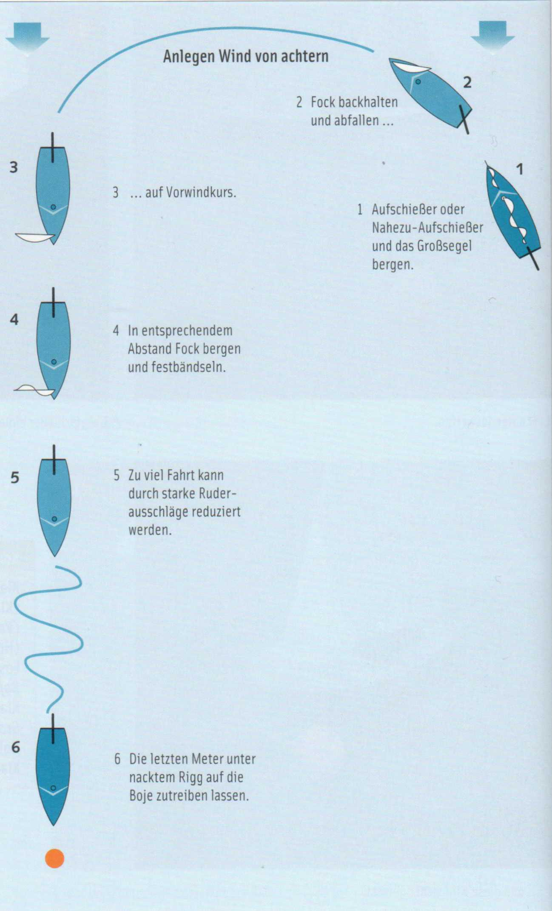